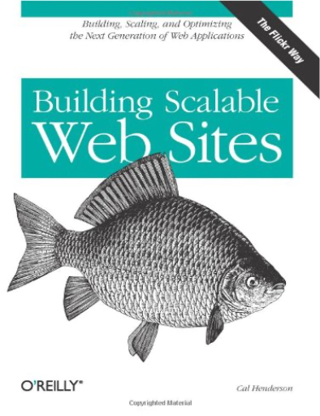

le vieil homme et la merernest hemingway le vieil homme et la merernest hemingway  La mer abrite des millions de poissons, mais le vieux pêcheur n'a rien pris depuis quatre-vingt-cinq jours. Elle s'étend à l'infini, les côtes cubaines s'éloignent inexorablement, et pourtant, il s'agit d'un roman de l'enfermement. Le Vieil Homme et la mer, durant trois jours entiers, se retrouvent face à face. Rare élément féminin dans ce récit qui oppose deux volontés viriles et où la douceur maternelle provient d'un gamin, la mer est le lieu du lien. Lien entre le vieil homme et l'espadon, entre le pêcheur et la vie, lien entre le retour et le départ, l'eau est un lieu de séjour transitoire entre la vie et la mort. A peine un purgatoire, car l'on imagine mal cet homme à l'âme sublime avoir commis aucun péché, la mer fait surgir en lui des sentiments d'amour profond, de respect pour la vie, mais aussi de manque et de lassitude. Les expressions reviennent sans cesse, les images sont récurrentes et la voix parle à l'esprit dont elle émane. Les poissons volent, comme mus par la tension incessante de l'esprit, qui ne tient plus qu'à un fil ténu, corde de ligne bandée jusqu'à la limite. Dans cet univers de répétition, le langage irisé de reflets d'argent semble naître d'un pathétique besoin d'émancipation. —Sana Tang-Léopold Wauters building scalable web sitescarl henderson Building Scalable Web Sites Looks at a variety of techniques for creating sites. This work examines techniques that go beyond sheer speed, exploring how to coordinate developers, support international users, and integrate with other services from email to SOAP to RSS to the APIs exposed by many Ajax-based web applications. Full description  de la petite taupe qui voulait savoir qui lui avait fait sur la têtewerner holzwart de la petite taupe qui voulait savoir qui lui avait fait sur la têtewerner holzwart En sortant de chez elle, la petite taupe reçoit sur la tête, une énorme crotte non identifiée. Sploutch ! Pour trouver le responsable, elle mène l'enquête auprès des animaux qu'elle rencontre. Splatshsh ! Fait le pâté laiteux du pigeon... Pouf, pouf, le crottin du cheval... Ratatata, les petits haricots ronds du lapin... Jusqu'à ce qu'elle retrouve Jean-Henri, le chien du boucher ! Et cling ! La petite taupe se venge en déposant son (minuscule) forfait sur sa tête ! Scatologique à souhait, mais très drôle, l'histoire fascine et amuse les petits (dès deux ans). —Emmanuelle Figueras |


 Made with Delicious Library
Made with Delicious LibraryNancy, State zipflap congrotus delicious library Thomas, Julien